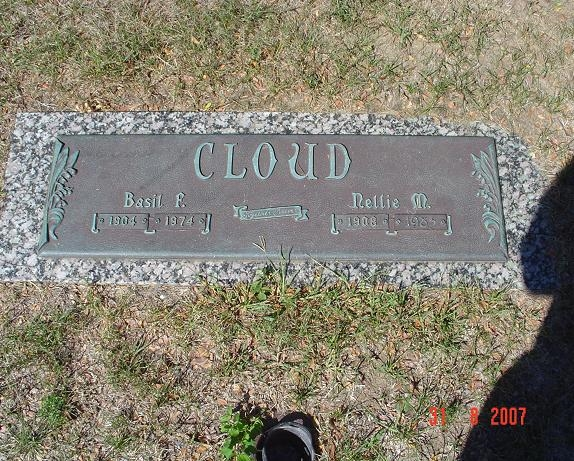

Basil Frederick Cloud 1904 - 1974
[ Home ] | [ Calendar ] | [ Surnames Index ] | [ Family History ], Basil Cloud, the husband of Nellie Mae Bixler (the fourth cousin twice-removed on the mother's side of Nigel Horne), was born in Madison, Jefferson, Indiana, USA on Jan 13, 1904<span class="citation">1,2,3,4</span> and married Nellie (with whom he had 3 children: <a href="I1304.html">Helen May</a>, <a href="I1305.html">Frederick Lawrence</a> and <a href="I1215.html">Shirley Elaine</a>) in Owen, Indiana, USA on Mar 13, 1926<span class="citation">5</span>.</p><p>Throughout his life, Basil lived in several places: in Indianapolis, Marion, Indiana on Apr 15, 1930; at 1361 W Ray Street, Indianapolis, Marion, Indiana on Nov 11, 1930; and at 1723 Milburn Street, Indianapolis, Marion, Indiana on Apr 2, 1942. <p>He died in Jan 1974 in Indianapolis, Marion, Indiana<span class="citation">1,2,4</span> and was buried there at Floral Park Cemetery in 1974<span class="citation">2</span>.
Children
- Helen May was born on Apr 13, 1927
- Frederick Lawrence was born on Mar 11, 1930
- Shirley Elaine was born on Jan 28, 1943
Citations
- Social Security Death Index - Findmypast
- U.S., Find A Grave Index, 1600s-Current Ancestry.com Operations, Inc.
- United States Marriages - Findmypast
- United States Obituary Notices - Findmypast
- United States Marriages - Findmypast
Media
Basil Cloud - Nellie Bixler Grave

Indiana Marriages 1811-1959 Transcription - R_75586542
Indiana, Marriages, 1780-1992 Transcription - R_327893093
Social Security Death Index Transcription - USBMD-SSDI-304104962
1930 US Census Transcription - USC-1930-004950631-00551-011
1940 US Census Transcription - USC-1940-1461728179
1920 US Census Transcription - USC-1920-004965829-01167-035
1910 US Census Image - USC-1910-004971224-00250
United States Marriages Transcription - FS-MAR-33738481-2
United States Marriages - R_75586542/1
United States Marriages - FS/MAR/33738481/1
United States Obituary Notices - US/TRIB/034627063
Family Tree

Generated by Ged2Site. Last updated on Jul 20, 2025